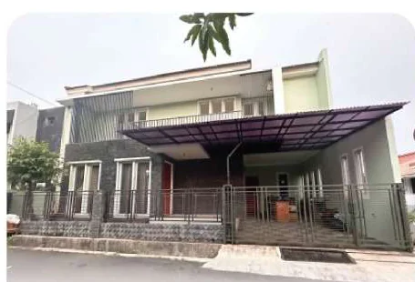
01
Program Tahun Ajaran 2026/2027
Program dan kurikulum didesain khusus untuk menunjang dan mempersiapkan pembelajaran di sekolah formal, sesuai minat dan kemampuan masing-masing anak.
Sumber: brosur hlm. 1–2
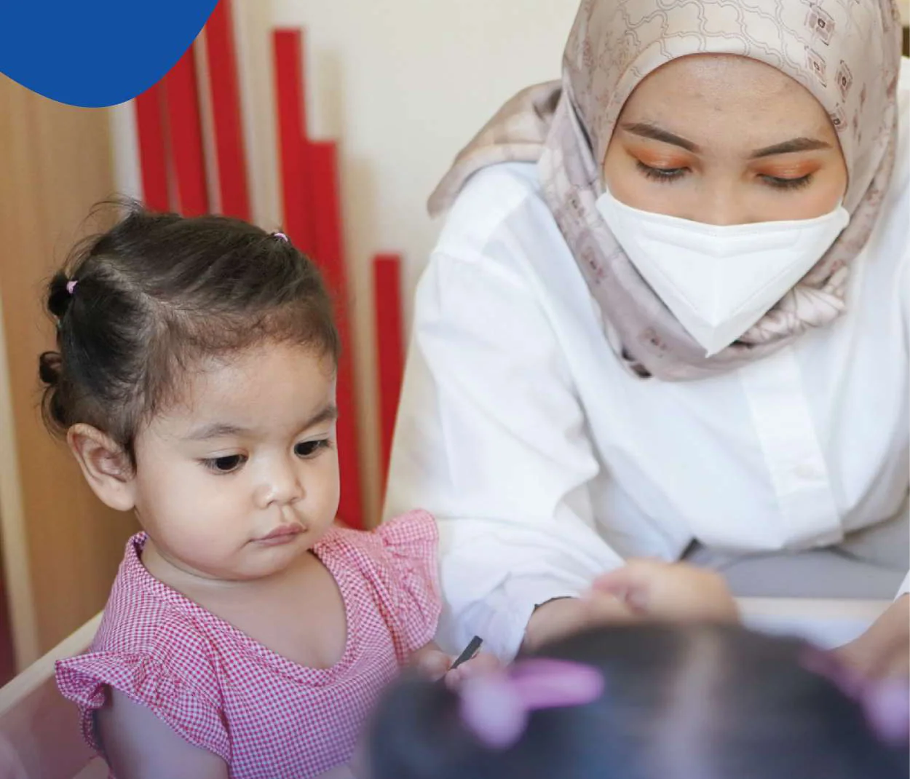
Mengapa mengikuti kelas?
Pendekatan, kurikulum, laporan, pengajar, fasilitas, dan jadwal yang dijelaskan dalam brosur.
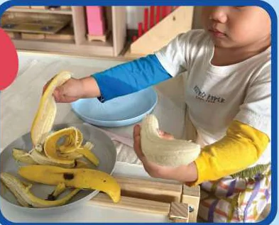
Pendekatan pembelajaran dengan metode Montessori dirancang sesuai kehidupan nyata dan melibatkan kelima indra anak secara aktif.
“What the hand does, the mind remembers.”
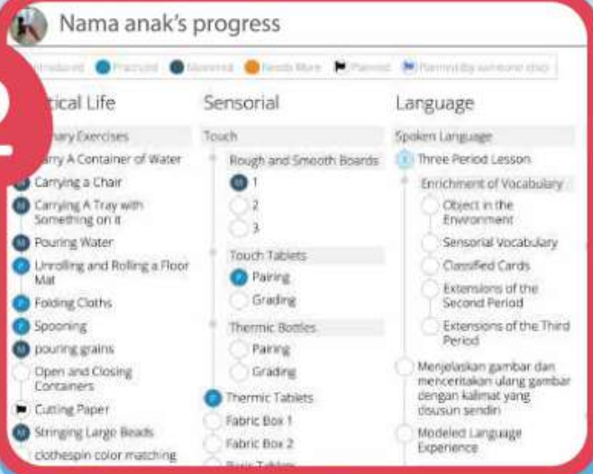
Pembelajaran terdiferensiasi dengan kurikulum individual yang disesuaikan dengan kebutuhan tiap anak.
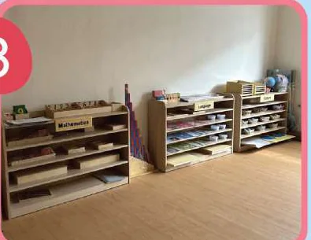
Stimulasi pra-menulis, membaca, dan matematika melalui Keterampilan Hidup, Sensorial, Bahasa, Matematika, dan Budaya, dengan aparatus lengkap dan berkualitas.
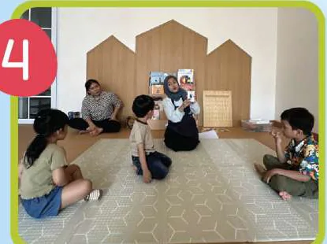
Kombinasi individual Montessori time dengan lesson plan per anak dan aktivitas kelompok tematik untuk mengasah keterampilan sosial serta mengenalkan konsep pengetahuan baru.
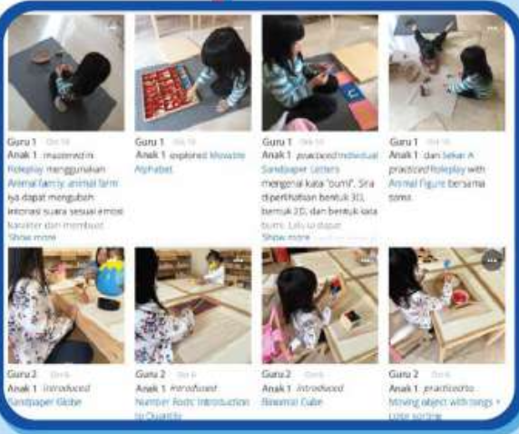
Laporan kegiatan harian berupa foto dan keterangan aktivitas, serta laporan perkembangan per tiga bulan sebanyak 10–20 halaman untuk portofolio capaian perkembangan anak.
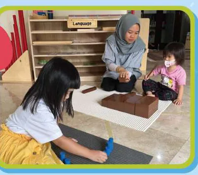
Brosur menyebut pengajar berkualitas, berdiploma Montessori, dan berpengalaman mengajar anak usia dini.
Lihat profil dan kualifikasi masing-masing pengajar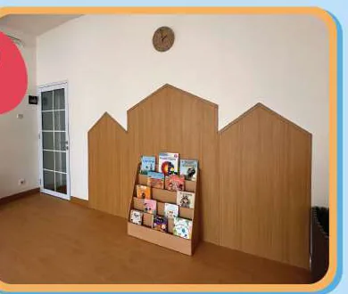
Tempat dan fasilitas belajar yang nyaman, bernuansa natural, dan dilengkapi AC.
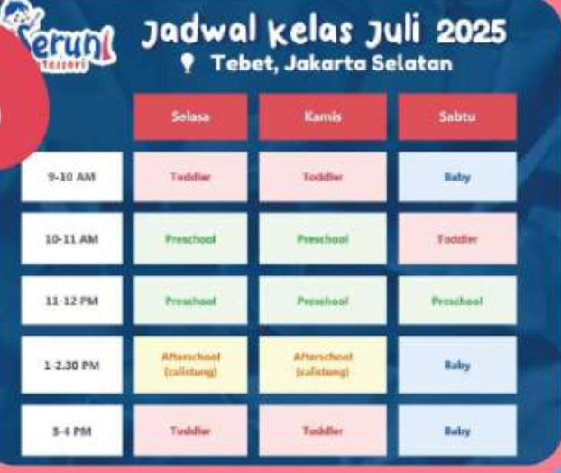
Jadwal fleksibel sesuai kebutuhan anak dan orang tua.
Sumber: brosur hlm. 2–3
Pilih sesuai tahap anak
Frekuensi di bagian ini adalah gambaran program dari brosur. Paket sesi dan biaya per cabang tersedia di bagian Biaya.
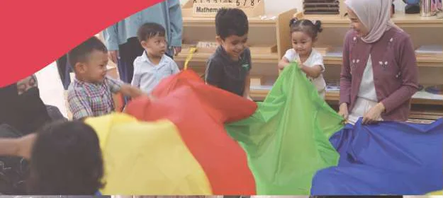
Aktivitas: Read Aloud, Arts & Craft, Music and Movement, Circle Time, Sensory Play, dan Montessori Time.
Sumber: brosur hlm. 5
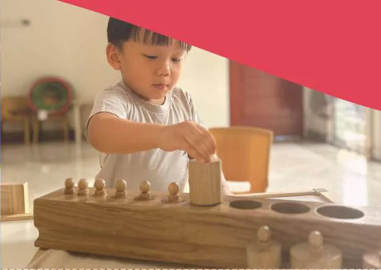
Aktivitas: Read Aloud, Arts & Craft, Music and Movement, Circle Time, Sensory Play, dan Montessori Time.
Sumber: brosur hlm. 5
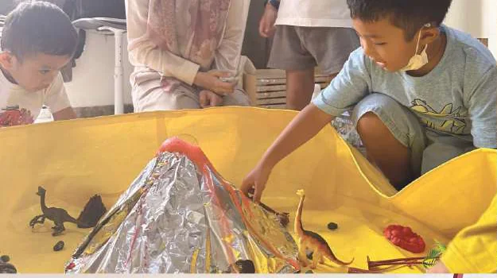
Aktivitas: Read Aloud, Music and Movement, Circle Time, Arts & Crafts, dan Science.
Sumber: brosur hlm. 6
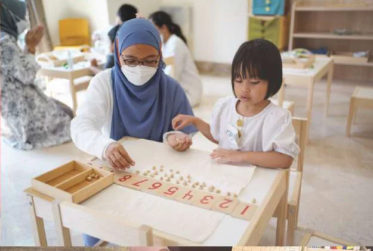
Aktivitas: Read Aloud, Music and Movement, Circle Time, Arts & Craft, dan Science.
Sumber: brosur hlm. 7
Ruang untuk belajar

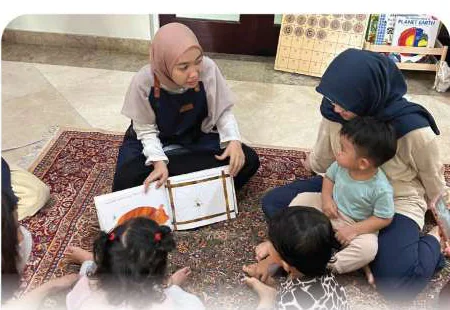
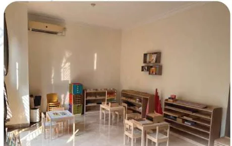

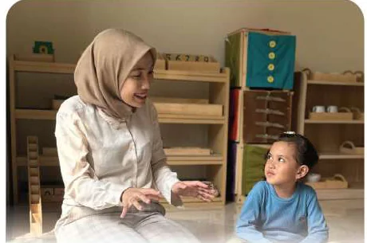
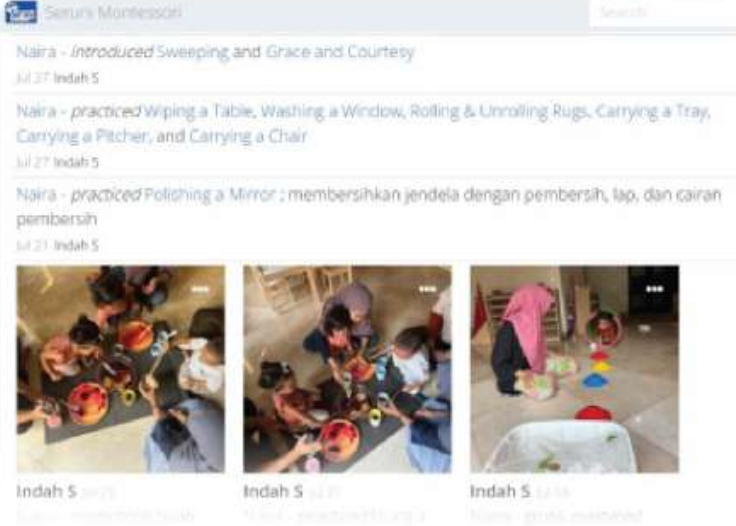
Sumber: brosur hlm. 8
Profil pengajar
Gelar dan status kualifikasi ditampilkan sebagaimana tercantum dalam brosur, termasuk penanda cand dan program yang sedang diselesaikan.
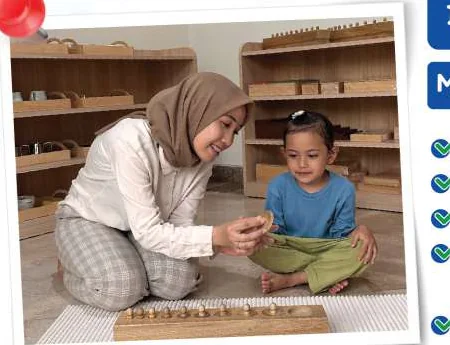
Montessori Directress & School Principal
S2 Magister Pendidikan Harvard University dan Diploma Montessori 2,5–6 tahun.
Profil pengajar · hlm. 9
Montessori Directress & School Principal
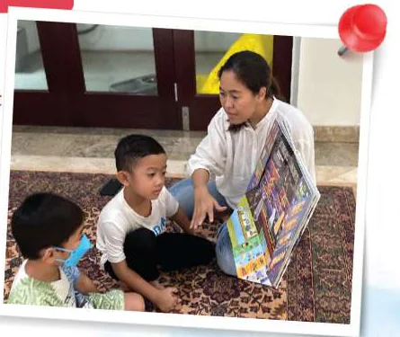
Montessori Directress
S2 Magister Pendidikan Harvard University dan Diploma Montessori 2,5–6 tahun.
Profil pengajar · hlm. 9
Montessori Directress
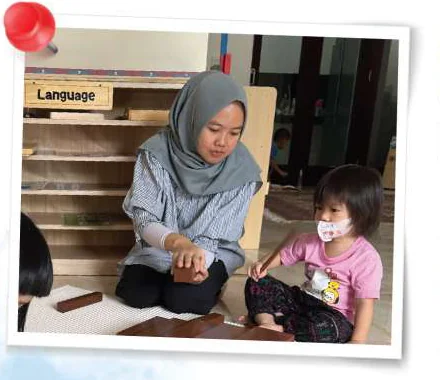
Montessori Directress
S1 Sarjana Pendidikan Bahasa Inggris dan Diploma Montessori 2,5–6 tahun.
Profil pengajar · hlm. 9
Montessori Directress
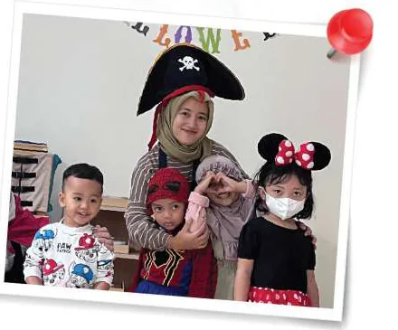
Montessori Directress
S1 Pendidikan Guru PAUD dengan status Diploma Montessori cand.
Profil pengajar · hlm. 10
Montessori Directress
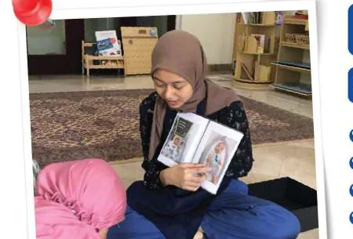
Montessori Directress
S1 Pendidikan Guru PAUD dan Certified Montessori 4–6 tahun (40 jam training).
Profil pengajar · hlm. 10
Montessori Directress
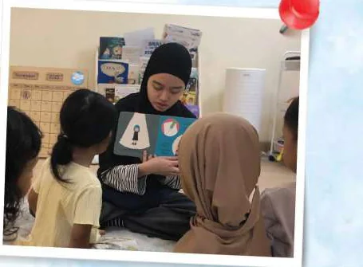
Montessori Directress
S1 Psikologi dan pengalaman mengajar di sekolah Montessori serta anak berkebutuhan khusus.
Profil pengajar · hlm. 10
Montessori Directress
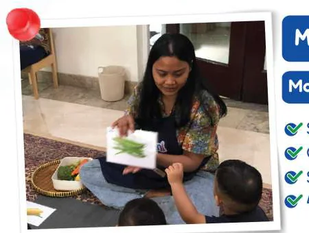
Montessori Directress
Certified Montessori 5 Areas & Montessori Baby 0–18 bulan; sedang menyelesaikan Diploma Montessori.
Profil pengajar · hlm. 11
Montessori Directress
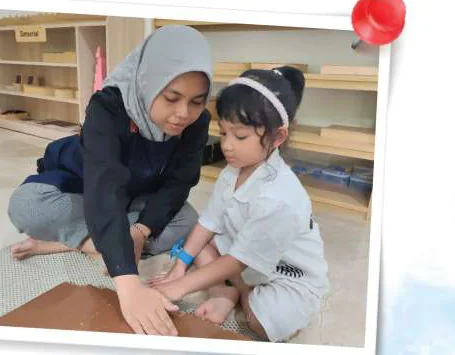
Montessori Directress
S1 Psikologi dengan pengalaman mengajar di sekolah Montessori dan anak berkebutuhan khusus.
Profil pengajar · hlm. 11
Montessori Directress
Sumber: brosur hlm. 9–11
Rincian per cabang
Pilih cabang untuk melihat paket yang tercantum pada brosur. Frekuensi paket di bagian ini berbeda dari gambaran umum program.
Cabang
1 sesi/minggu · dengan 1 pendamping
2 sesi/minggu · dengan 1 pendamping
2 sesi/minggu · tanpa pendamping
2 sesi/minggu · tanpa pendamping
Sumber: brosur hlm. 12
Cabang
1 sesi/minggu · dengan 1 pendamping
2 sesi/minggu · dengan 1 pendamping
2 sesi/minggu · tanpa pendamping
2 sesi/minggu · tanpa pendamping
Sumber: brosur hlm. 13
Cabang
1 sesi/minggu · dengan 1 pendamping
2 sesi/minggu · dengan 1 pendamping
2 sesi/minggu · tanpa pendamping
2 sesi/minggu · tanpa pendamping
Sumber: brosur hlm. 14
Cabang
1 sesi/minggu · dengan 1 pendamping
2 sesi/minggu · dengan 1 pendamping
2 sesi/minggu · tanpa pendamping
2 sesi/minggu · tanpa pendamping
Sumber: brosur hlm. 15
Ketentuan biaya
“Semi-private class with 3-6 student and 2 Montessori directresses (teacher) per class. Language used in class : English and Bahasa.”
Sumber: catatan kaki brosur hlm. 12–15
Kegiatan & aparatus
Foto kegiatan dan lingkungan belajar yang ditampilkan dalam brosur.
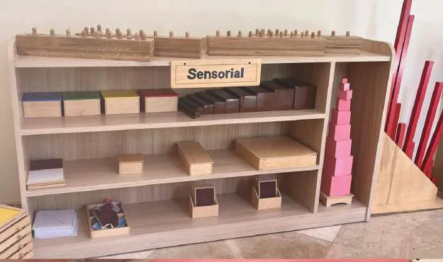
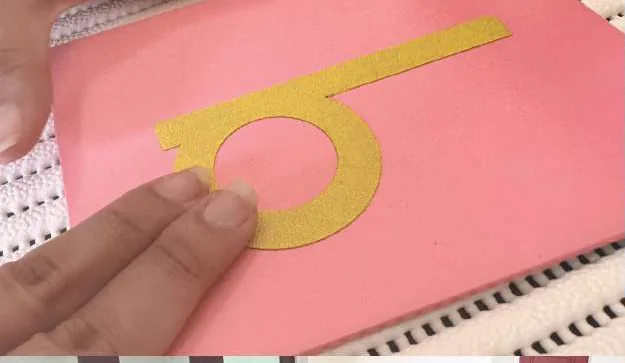
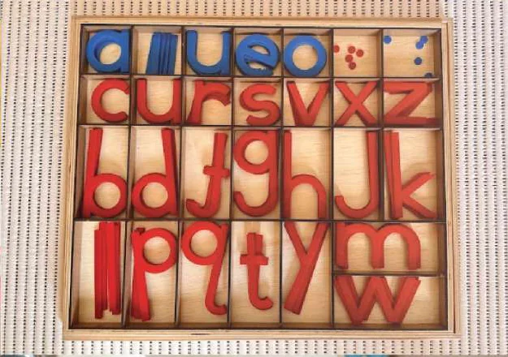
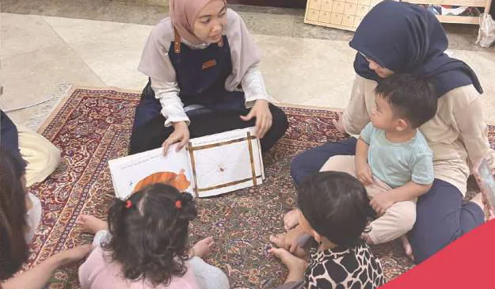
Sumber foto: brosur hlm. 5–8 dan 16. Caption kegiatan digunakan hanya pada aktivitas yang dapat dicocokkan dengan label di hlm. 5–7.
Hubungi kami
Pilih cabang tujuan untuk mengirim pertanyaan melalui WhatsApp.
Brosur 2026/2027Sumber: brosur hlm. 17
Jakarta Timur
Bekasi
Jakarta Selatan
Tangerang Selatan